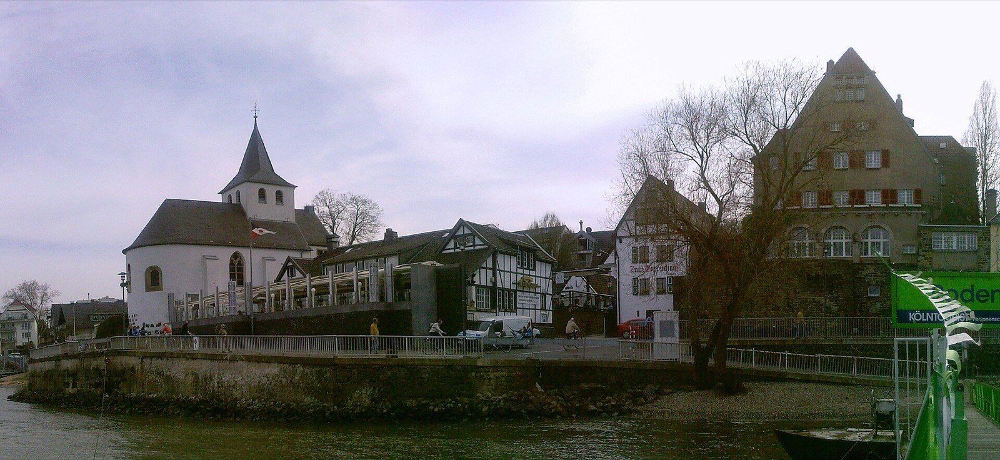
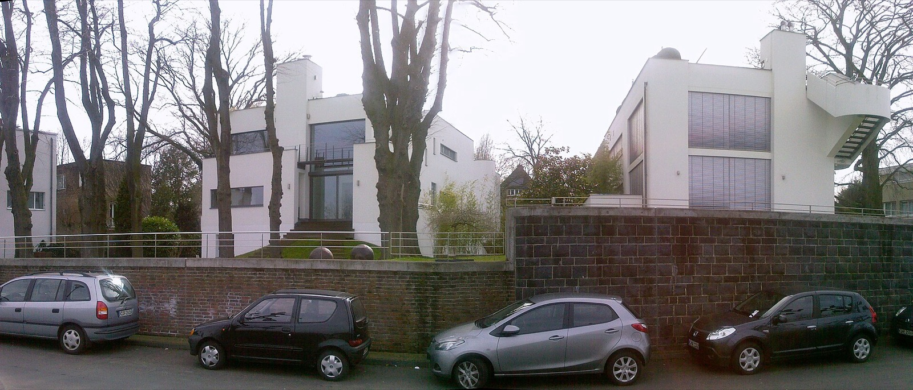
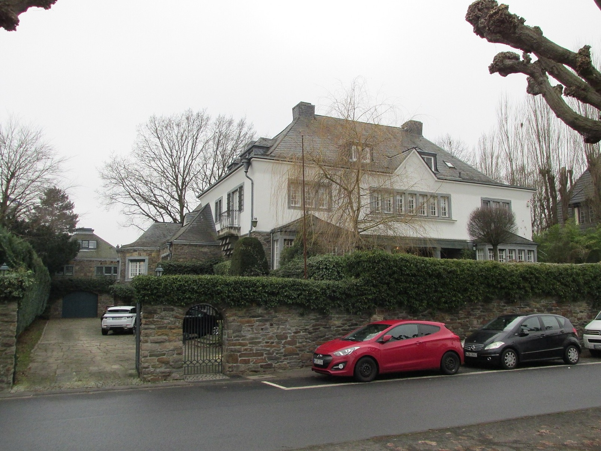
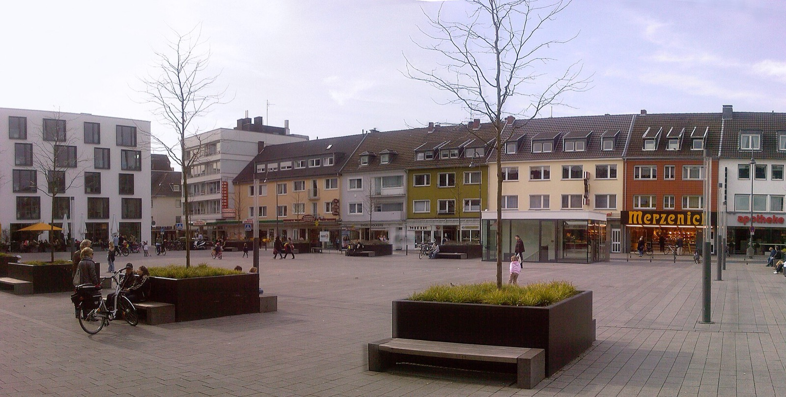
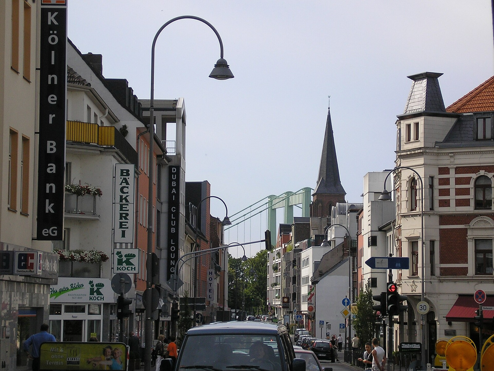
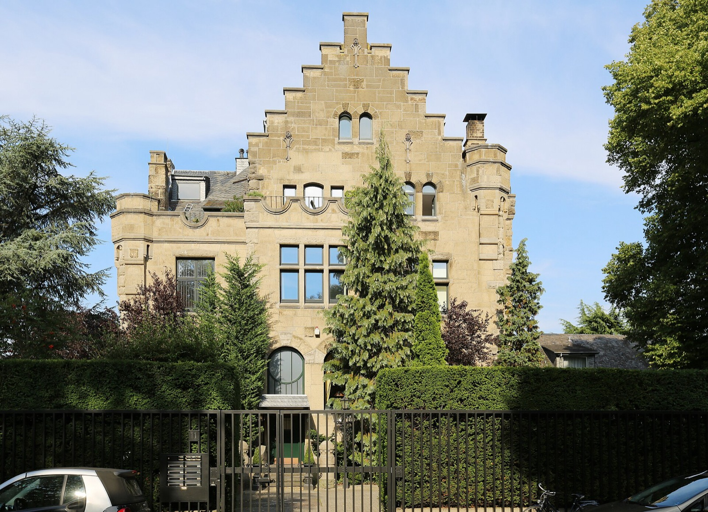

Immobilienmakler in Köln-Rodenkirchen
Rodenkirchen ist nicht ein Immobilienmarkt, sondern sechs nebeneinander. Zwischen dem günstigsten und dem teuersten Segment liegt der Faktor 2,4 — und zwischen der günstigsten und der teuersten der zehn Bodenzonen noch einmal derselbe.
Was ist Ihre Immobilie in Köln-Rodenkirchen wert?
In sechs Schritten zu einer realistischen Einschätzung für Rodenkirchen. Kostenlos, unverbindlich und ohne Vertrag. Womit fangen wir an?
Andere Objektart wählenRodenkirchen ist nicht ein Markt, sondern sechs
Wer den Wert einer Rodenkirchener Immobilie mit einem einzigen Quadratmeterpreis überschlägt, rechnet fast zwangsläufig falsch — und zwar nicht um ein paar Prozent. Der Grundstücksmarktbericht 2026 wertet für den Stadtteil 138 Kaufverträge des Jahres 2025 aus, verteilt auf fünf Objektarten. Zwischen der günstigsten und der teuersten liegt der Faktor 2,4.
Diese Datenlage ist ungewöhnlich gut. In vielen Kölner Stadtteilen reicht sie für eine oder zwei Objektarten; in Rodenkirchen sind alle fünf Wohnsegmente einzeln belegt, das größte davon mit 79 Verkäufen. Deshalb lässt sich hier etwas zeigen, was ein Durchschnittswert verdeckt.
Gutachterausschuss für Grundstückswerte in der Stadt Köln, Grundstücksmarktbericht 2026, Berichtsjahr 2025. Die Mehrfamilienhäuser sind für den gesamten Stadtbezirk Rodenkirchen ausgewertet, alle übrigen Werte für den Stadtteil.
Warum ein Reihenhaus teurer ist als eine Wohnung
Die Rangfolge überrascht auf den ersten Blick. Ein Reihenmittelhaus kostete 2025 im Schnitt 5.662 Euro je Quadratmeter Wohnfläche, eine Eigentumswohnung aus dem Bestand 4.790 Euro. Das Haus liegt damit 18 Prozent über der Wohnung. Dabei ist ein Reihenmittelhaus die schmalste Bauform, die es im Einfamilienhausbau gibt.
Der Grund steht nicht im Haus, sondern darunter. Wer ein Reihenhaus kauft, kauft ein Grundstück mit. Bei einer Eigentumswohnung ist der Boden nur als Miteigentumsanteil enthalten, aufgeteilt auf alle Parteien der Anlage. Der Quadratmeterpreis der Wohnfläche enthält bei Häusern also einen Bodenanteil, der bei Wohnungen weitgehend fehlt. Bei Rodenkirchener Bodenrichtwerten zwischen 930 und 2.280 Euro je Quadratmeter macht dieser Anteil einen erheblichen Teil des Kaufpreises aus.
Und warum das Mehrfamilienhaus ganz unten steht
Noch deutlicher wird es beim Mehrfamilienhaus. Mit durchschnittlich rund 1,463 Millionen Euro war es 2025 das teuerste Objekt der ganzen Auswertung — mehr als das freistehende Einfamilienhaus mit 1,297 Millionen. Und je Quadratmeter steht es mit 3.214 Euro trotzdem am Ende der Liste, bei weniger als der Hälfte des Neubauwerts.
Das ist kein Widerspruch, sondern eine andere Bewertungslogik. Ein Mehrfamilienhaus kauft niemand, um darin zu wohnen. Käufer rechnen mit der Jahresmiete, mit dem Instandhaltungsstau, mit dem Modernisierungsbedarf und mit dem, was sich aus dem Objekt noch machen lässt. Der Quadratmeterpreis ist bei dieser Objektart eine Folge des Ertrags, keine Ursache des Preises. Wer ein Mehrfamilienhaus in Rodenkirchen verkaufen möchte, braucht deshalb keine Wohnflächen-, sondern eine Ertragsbetrachtung — und Unterlagen, die diesen Ertrag belegen.
Die sechs Segmente im Einzelnen
| Objektart | Verkäufe | Ø Kaufpreis | Ø je m² Wohnfläche | Ø Wohnfläche |
|---|---|---|---|---|
| Neubauwohnung | 18 | — | 7.699 € | — |
| Freistehendes Ein- und Zweifamilienhaus | 19 | 1.297.000 € | 6.874 € | 195 m² |
| Doppelhaushälfte, Reihenendhaus | 15 | 953.000 € | 6.283 € | 151 m² |
| Reihenmittelhaus | 7 | 781.000 € | 5.662 € | 136 m² |
| Eigentumswohnung, Weiterverkauf | 79 | — | 4.790 € | — |
| Mehrfamilienhaus, Stadtbezirk Rodenkirchen | 17 | 1.463.000 € | 3.214 € | — |
Gutachterausschuss für Grundstückswerte in der Stadt Köln, Grundstücksmarktbericht 2026. Durchschnittswerte, gerundet. Die Kaufpreise ergeben sich nicht exakt aus Wohnfläche mal Quadratmeterpreis, weil beide Größen unabhängig voneinander gemittelt wurden.
Zehn Bodenzonen — und noch einmal derselbe Faktor
Die zweite Spreizung liegt im Boden. BORIS NRW weist für die Rodenkirchener Wohnbauflächen zum Stichtag 1. Januar 2026 zehn Bodenrichtwertzonen aus. Sie reichen von 930 bis 2.280 Euro je Quadratmeter; der Median liegt bei 1.545 Euro. Das ist der Faktor 2,45 — praktisch derselbe Wert wie bei den Objektarten, nur aus einer völlig anderen Richtung.
Wie ungewöhnlich das ist, zeigt der Blick auf die Nachbarschaft. Für Marienburg führt BORIS NRW eine einzige Zone über den gesamten Stadtteil, für Hahnwald ebenfalls. Wer dort ein Grundstück bewertet, beginnt überall mit demselben Ausgangswert. In Rodenkirchen hängt schon dieser erste Wert davon ab, in welcher der zehn Zonen das Grundstück liegt.
Balken: Spanne zwischen günstigster und teuerster Zone. Punkt: Median. Marienburg und Hahnwald haben je nur eine Zone und deshalb kein Band. Quelle: BORIS NRW, Bodenrichtwerte zum 1. Januar 2026.
Was das für die Einordnung bedeutet
Zwei Zahlen aus dieser Grafik sind für Eigentümer entscheidend. Die teuerste Rodenkirchener Zone liegt mit 2.280 Euro über dem Wert, der für ganz Marienburg gilt. Die günstigste liegt mit 930 Euro unter jeder Zone in Sürth. Beides sind Rodenkirchener Adressen, beide gehören zum selben Stadtteil, beide tragen dieselbe Postleitzahl.
Ein Verkäufer, der sich an einem Durchschnitt orientiert, liegt also entweder deutlich zu hoch oder deutlich zu tief — und beides kostet Geld. Ein zu hoher Angebotspreis führt dazu, dass eine Immobilie über Monate im Portal steht und am Ende unter Wert verkauft wird, weil Interessenten die lange Laufzeit als Signal lesen. Ein zu niedriger Preis wird sofort angenommen, und der Verkäufer erfährt nie, was möglich gewesen wäre.

Rodenkirchen im Vergleich mit dem eigenen Bezirk
Der Stadtbezirk Rodenkirchen reicht vom Grüngürtel bis zur Stadtgrenze bei Sürth und umfasst Stadtteile, die preislich weit auseinanderliegen. Für die Einordnung einer einzelnen Immobilie ist dieser Vergleich oft aufschlussreicher als der Kölner Durchschnitt, weil Käufer im Süden meist genau innerhalb dieses Rahmens vergleichen.
| Stadtteil | Wohnung, Weiterverkauf | Bodenrichtwert | Zonen |
|---|---|---|---|
| Hahnwald | 7.952 €/m² | 1.270 €/m² | 1 |
| Bayenthal | 5.921 €/m² | 2.370–2.930 €/m² | 3 |
| Marienburg | 5.684 €/m² | 2.100 €/m² | 1 |
| Rodenkirchen | 4.790 €/m² | 930–2.280 €/m² | 10 |
| Sürth | 4.740 €/m² | 1.060–1.320 €/m² | 3 |
| Weiß | 3.811 €/m² | 1.120–1.750 €/m² | 2 |
Grundstücksmarktbericht 2026 (Berichtsjahr 2025) und BORIS NRW zum 1. Januar 2026.
Die Tabelle zeigt einen Zusammenhang, der der Intuition widerspricht: Der höchste Wohnungspreis im Bezirk steht in Hahnwald, dem Stadtteil mit einem der niedrigsten Bodenrichtwerte. Das liegt daran, dass der Bodenrichtwert eine Aussage über den Quadratmeter Grundstück macht, der Wohnungspreis dagegen über den Quadratmeter Wohnfläche. In Hahnwald stehen wenige, große Objekte auf sehr großen Grundstücken — die Fläche ist dort günstig, die Immobilie darauf nicht.
Rodenkirchen liegt in beiden Größen im Mittelfeld des Bezirks, aber mit der größten Streuung. Genau deshalb greift hier weder der Bezirksschnitt noch der Kölner Durchschnitt.

Dieselbe Fläche, sechs Preise
Weil die Objektart in Rodenkirchen so stark durchschlägt, lohnt ein unmittelbarer Vergleich. Wählen Sie Ihre Objektart und die Wohnfläche — das Feld rechnet den Durchschnitt des Grundstücksmarktberichts hoch und stellt daneben, was dieselbe Fläche in den anderen fünf Segmenten gekostet hätte.
Was für eine Immobilie ist es?
Bei Häusern ist die Wohnfläche gemeint, nicht die Grundstücksfläche.
Rechnerisch, nach dem Durchschnitt Ihres Segments
579.600 €
121 m² × 4.790 €/m² (Eigentumswohnung, Weiterverkauf, 79 Verkäufe 2025)
Dieselbe Fläche in den anderen Segmenten
Diese Rechnung ist eine Einordnung, keine Bewertung. Sie multipliziert einen amtlichen Durchschnitt mit einer Fläche und weiß nichts über Zustand, Baujahr, Etage, Ausstattung, Grundriss, Bodenrichtwertzone oder Modernisierungsstand Ihrer Immobilie. Der Abstand zwischen dieser Zahl und einem erzielbaren Preis kann in beide Richtungen erheblich sein — die kostenlose Bewertung klärt, in welche.
Ein Verkauf an der Maternusstraße — und was er nicht beweist
Marktkenntnis sollte sich nicht in dem Satz erschöpfen: „Ich kenne Rodenkirchen." Deshalb ein konkreter Fall aus meiner eigenen Praxis.
Maternusstraße, Köln-Rodenkirchen
- Objekt
- Eigentumswohnung, rund 100 m²
- Verkaufspreis
- 790.000 €
- Käufer gefunden
- nach 4 Wochen
- Notartermin
- nach 6 Wochen
- Verkauft
- 2021
Das entspricht rund 7.900 Euro je Quadratmeter — also knapp 65 Prozent über dem Durchschnitt von 4.790 Euro, den der Grundstücksmarktbericht für 2025 ausweist. Wer daraus schließt, Rodenkirchener Wohnungen hätten seither ein Drittel verloren, liest die Zahl falsch.
Zwei Dinge stehen dazwischen. Erstens der Zeitpunkt: Der Verkauf fand 2021 statt, vor der Zinswende und vor der Preiskorrektur der Jahre 2022 bis 2024, nach der sich der Kölner Markt auf einem neuen Niveau eingependelt hat. Zweitens, und schwerer wiegend: Ein einzelner Verkauf ist kein Durchschnitt. Diese Wohnung hatte eine Lage, einen Zuschnitt und einen Zustand, die 79 andere Verkäufe nicht hatten.
Genau deshalb steht dieser Fall hier. Er ist kein heutiger Vergleichspreis, und ich möchte ihn auch nicht als solchen verwendet sehen. Er zeigt etwas anderes: dass die Spanne nach oben offen ist, wenn Objekt, Käuferansprache und Zeitpunkt zusammenpassen — und dass kein Durchschnittswert der Welt vorhersagt, wo eine bestimmte Immobilie innerhalb dieser Spanne landet.

Ein guter Verkauf beginnt vor dem ersten Inserat
Ein Immobilienverkauf gerät selten daran ins Stocken, dass sich kein Käufer findet. Häufiger stockt er, weil Unterlagen fehlen oder Fragen erst auftauchen, wenn der Käufer schon gefunden ist — und dann ist die Verhandlungsposition eine andere. Deshalb bereite ich eine Immobilie vor der Vermarktung nicht nur bewertungsseitig, sondern verkaufsfähig auf.
Fehlende Unterlagen: darum kümmere ich mich
Fehlt ein aktueller Grundbuchauszug, beschaffe ich ihn über meinen Notarkontakt in der Regel noch am Tag der Bestellung. Auch Unterlagen von Bauamt, Amtsgericht, Katasteramt oder anderen zuständigen Stellen organisiere ich. Fehlende Bauzeichnungen kann mein Architekt prüfen und bei Bedarf neu erstellen oder aufbereiten; einen erforderlichen Energieausweis erstelle ich oder lasse ihn erstellen. Eine Übersicht, was üblicherweise gebraucht wird, finden Sie in der Unterlagencheckliste.
Bei Rodenkirchener Objekten kommen zwei Punkte häufiger vor als anderswo. Der erste betrifft Garagen und Stellplätze: Gehört die Garage rechtlich zur Wohnung? Ist sie Teileigentum oder ein Sondernutzungsrecht? Kann sie separat verkauft werden? Das steht in der Teilungserklärung und sollte geklärt sein, bevor jemand danach fragt. Der zweite betrifft Grundstücke im Rheinvorland — Lage und Hochwasserschutz sind für Käufer ein Thema, und eine belegte Auskunft ist besser als eine ausweichende.
Erst die Käufergruppe, dann die Vermarktung
Bevor eine Immobilie veröffentlicht wird, möchte ich wissen: Wer soll sie kaufen, und warum ist sie für genau diese Gruppe interessant? Erst danach entstehen Preispositionierung, Präsentation und Vermarktungsstrategie. Je nach Objekt und Strategie nutzen wir ImmoScout24, Immowelt, Kleinanzeigen, unsere eigene Website, Facebook, Instagram, TikTok und WhatsApp — und ergänzend die Käuferkartei sowie das persönliche Netzwerk.
Nicht jede Immobilie muss sofort auf allen Portalen erscheinen. Wenn Diskretion gewünscht ist und passende Käufer vorgemerkt sind, kann eine gezielte Vorvermarktung sinnvoller sein. Bei welchen Objekten das gilt, entscheidet sich am Objekt, nicht am Prinzip.

Für Ihre Immobilie zählt nicht irgendein Interessent
Ein modernisiertes Einfamilienhaus braucht eine andere Käuferansprache als ein sanierungsbedürftiges Objekt, eine große Eigentumswohnung oder ein Mehrfamilienhaus. Weil in Rodenkirchen alle sechs Segmente nebeneinander vorkommen, besteht unsere Käuferkartei neben Eigennutzern aus mehreren Investorengruppen.
- Käufer von Mehrfamilienhäusern — rechnen mit Miete, Ertrag, Zustand und Entwicklungsmöglichkeiten, nicht mit Wohnflächenpreisen.
- Projektentwickler — interessieren sich für Grundstück, Zuschnitt und das, was planungsrechtlich möglich ist.
- Fix-and-Flip-Investoren — kaufen modernisierungsbedürftige Objekte, werten sie auf und verkaufen weiter.
- Investoren für Aufteilungs- und Vermietungskonzepte — prüfen bei größeren Wohnungen je nach Objekt möblierte Vermietung oder WG-Konzepte.
Was für einen klassischen Käufer wie ein Nachteil aussieht, kann für einen Investor das gesuchte Potenzial sein. Ein Haus mit Sanierungsstau ist für die eine Gruppe ein Ausschlusskriterium und für die andere der eigentliche Grund zu kaufen. Dieselbe Immobilie erzielt deshalb je nach Ansprache verschiedene Preise — und das ist keine Frage des Verhandlungsgeschicks, sondern der Zielgruppenwahl.
Weitere Kontakte aus dem eigenen Netzwerk
Ich bin selbst IHK-Hausverwalter und Teil einer großen Hausverwaltergruppe. Ergänzt wird das durch persönliche Kontakte zu unabhängigen Baufinanzierern, Architekten, Energieberatern, Bauherren, Bauleitern und Verantwortlichen von Bauunternehmen. Für Sie als Verkäufer ist dabei nicht entscheidend, wie lang eine Kontaktliste ist, sondern wer für genau Ihre Immobilie der richtige Käufer oder Multiplikator sein kann.
Verkauf und Käuferfinanzierung aus einer Hand
Ein Interessent muss Ihre Immobilie nicht nur kaufen wollen, er muss sie auch finanzieren können. Ich bin Immobilienmakler nach § 34c GewO und zugleich Immobiliardarlehensvermittler nach § 34i GewO — geeignete Kaufinteressenten können wir deshalb bei Bedarf auch bei der Finanzierung unterstützen. Für Sie als Verkäufer zählt am Ende nicht die Höhe eines Angebots, sondern ob daraus ein belastbarer Verkauf wird.

Rodenkirchen in Zahlen
Rodenkirchen zählt 18.251 Einwohner und liegt damit auf Rang 17 der 86 Kölner Stadtteile. Das Durchschnittsalter beträgt 46,6 Jahre — Rang 5 und damit gleichauf mit Hahnwald. Für den Verkauf ist das keine Randnotiz: Ein hoher Altersdurchschnitt bedeutet, dass regelmäßig Immobilien aus Nachlässen und Umzügen ins Betreute Wohnen auf den Markt kommen — und dass ebenerdige, barrierearme Wohnungen eine Nachfrage finden, die anderswo kleiner ist.
Marktdaten Köln-Rodenkirchen
- Bodenrichtwert
- 930–2.280 €/m²Median 1.545 · 10 Zonen · Stichtag 1.1.2026
- Wohnung, Weiterverkauf
- 4.790 €/m²79 Kaufverträge 2025
- Wohnung, Neubau
- 7.699 €/m²18 Kaufverträge 2025
Amtliche Werte — Quellen und Methodik.
Bebauung in Köln-Rodenkirchen
Heterogen gewachsen: Villen des frühen 20. Jahrhunderts, darunter die burgähnliche Villa Malta von 1904/05, ein Baudenkmal oberhalb des Leinpfads, Wohngebäude im Bauhausstil und große Anlagen wie der Wohnpark Rodenkirchen, die das dörfliche Gepräge abgelöst haben.
Lage und Infrastruktur
Stadtbahn 16 und 17 als Verbindung zwischen Innenstadt und Bonn, Bus 130, 131, 134 und 135, Anschluss an die A 555. Forstbotanischer Garten, Friedenswald und das Rheinufer mit Leinpfad; der Grüngürtel bildet die Zäsur zur Stadt.
Wohnungsbestand in Zahlen
Über die 9.557 Wohnungen in Köln-Rodenkirchen liegt die mittlere Wohnfläche bei 95 m², rund 18 Quadratmeter über dem Kölner Mittel von 77 m². Der typische Interessent sucht Platz für mehrere Personen. Wer eine kleine Wohnung anbietet, bedient dagegen eine Nische mit wenig Angebot. Die Haushaltsstruktur unterscheidet sich vom Kölner Schnitt: 49 % Einpersonenhaushalte (Köln 52 %) und 19 % Haushalte mit Kindern (Köln 18 %) bei 8.883 Haushalten. Weil Singles und Familien gleichermaßen suchen, entscheidet die Ansprache im Exposé stärker als anderswo. Stadt Köln, Statistischer Datenkatalog 2025.
Was macht den Wert einer Immobilie in Rodenkirchen aus?
Die Reihenfolge ist eindeutig: erst die Objektart, dann die Bodenrichtwertzone, dann Zustand und Ausstattung. Die ersten beiden Fragen entscheiden über die Größenordnung, die dritte über die Stelle innerhalb dieser Größenordnung. Wer mit Punkt drei anfängt, verhandelt über Details, während die Einordnung insgesamt falsch ist.
Verkauf einer geerbten Immobilie: was ist zu beachten?
Erbengemeinschaften brauchen eine neutrale, belastbare Wertermittlung als Entscheidungsgrundlage — gerade in Rodenkirchen, wo zwei Miterben denselben Stadtteil googeln und je nach Objektart auf Quadratmeterpreise zwischen 3.214 und 7.699 Euro stoßen können. Wir bewerten diskret, begleiten die Unterlagenbeschaffung und stimmen den Verkauf mit allen Beteiligten ab.
Alle genannten Werte ordnen ein, sie ersetzen keine Bewertung. Den Wert Ihres Objekts ermitteln wir kostenlos und unverbindlich, auf Wunsch bei einem Termin bei Ihnen.
Die wichtigsten Fragen vor dem Verkauf
Für weiterverkaufte Eigentumswohnungen lag der Durchschnitt im Berichtsjahr 2025 bei 4.790 Euro je Quadratmeter, ausgewertet aus 79 Kaufverträgen. Das ist eine der belastbarsten Datengrundlagen im Kölner Süden, aber eben ein Durchschnitt. Für Ihre Wohnung kommen Mikrolage, Zustand, Grundriss, Etage, Aufzug, Balkon oder Terrasse, Garage oder Stellplatz und die aktuelle Nachfrage hinzu.
Bei den 19 ausgewerteten freistehenden Ein- und Zweifamilienhäusern lag der durchschnittliche Kaufpreis 2025 bei rund 1,297 Millionen Euro, bei einer mittleren Wohnfläche von 195 Quadratmetern. Bei Häusern entscheidet das Grundstück stark mit: Rodenkirchen hat zehn Bodenrichtwertzonen zwischen 930 und 2.280 Euro je Quadratmeter, und schon die Zonenzugehörigkeit verschiebt die Einordnung erheblich.
Bei sieben ausgewerteten Verkäufen lag der durchschnittliche Kaufpreis bei rund 781.000 Euro beziehungsweise 5.662 Euro je Quadratmeter Wohnfläche, bei im Mittel 136 Quadratmetern. Sieben Verkäufe sind eine schmale Grundlage — der Wert taugt zur Orientierung, nicht als Maßstab für ein einzelnes Haus.
Doppelhaushälften und Reihenendhäuser werden im Grundstücksmarktbericht gemeinsam ausgewertet. Bei 15 Verkäufen lag der durchschnittliche Kaufpreis 2025 bei rund 953.000 Euro, das entspricht 6.283 Euro je Quadratmeter bei rund 151 Quadratmetern mittlerer Wohnfläche.
Bei 18 ausgewerteten Neubauwohnungen lag der Durchschnitt bei 7.699 Euro je Quadratmeter — 60,7 Prozent über dem Bestandswert. Bei 120 Quadratmetern sind das rund 349.000 Euro Unterschied für dieselbe Fläche. Der Abstand erklärt sich aus Baustandard, Energieeffizienz und der niedrigen Neubautätigkeit in Köln.
Weil beim Haus das Grundstück mitgekauft wird. Bei einer Eigentumswohnung ist der Boden nur als Miteigentumsanteil enthalten, verteilt auf alle Parteien der Anlage. Der auf die Wohnfläche bezogene Quadratmeterpreis enthält bei Häusern also einen Bodenanteil, der bei Wohnungen weitgehend fehlt.
Nicht automatisch. Entscheidend ist, ob eine Investition voraussichtlich einen höheren Mehrerlös erzeugt, als sie kostet. Manche Maßnahmen zahlen sich aus, andere verpuffen, weil Käufer ohnehin nach eigenem Geschmack umbauen. Das sollte vor größeren Ausgaben geprüft werden — im Zweifel gewinnt eine gründliche Aufbereitung der Unterlagen mehr als eine neue Küche.
Dann klären wir zuerst, was tatsächlich benötigt wird. Je nach Fall beschaffe ich Unterlagen über Notar, Bauamt, Amtsgericht oder Katasteramt. Einen aktuellen Grundbuchauszug bekomme ich über meinen Notarkontakt in der Regel noch am Tag der Bestellung. Fehlende Bauzeichnungen kann mein Architekt prüfen und bei Bedarf neu erstellen, und einen erforderlichen Energieausweis organisiere ich ebenfalls.
Ja. Je nach Immobilie prüfen wir zuerst, ob passende vorgemerkte Käufer oder Investoren angesprochen werden können oder ob eine breite öffentliche Vermarktung den besseren Preis bringt. Nicht jede Immobilie muss sofort auf sämtlichen Portalen erscheinen.
Ja. Ich bin Immobilienmakler nach § 34c GewO und zugleich Immobiliardarlehensvermittler nach § 34i GewO. Über unsere Finanzierungsplattformen vergleichen wir die Konditionen zahlreicher Banken und Versicherer. Für Sie als Verkäufer zählt nicht nur die Höhe eines Angebots, sondern ob daraus ein belastbarer Verkauf wird.
Nein. Die Bewertungsanfrage ist kostenlos und unverbindlich. Durch die Anfrage entsteht kein Maklerauftrag. Sie entscheiden danach in Ruhe, ob Sie mit mir verkaufen möchten.
Was ich für Ihren Verkauf in Rodenkirchen übernehme
Vom ersten Gespräch bis zur Übergabe bleibt die Zuständigkeit bei einer Person. Sie sprechen nicht mit einem Vertrieb, der einen Termin vereinbart, und danach mit jemand anderem.
- Einordnung nach Objektart und Bodenrichtwertzone, nicht nach Stadtteildurchschnitt
- Beschaffung fehlender Unterlagen über Notar, Bauamt, Katasteramt und Architekt
- Diskrete Vorvermarktung oder breite Veröffentlichung — abhängig vom Objekt, nicht vom Prinzip
- Frühe Prüfung der Finanzierbarkeit auf Käuferseite
- Begleitung bis zum Notartermin und zur Übergabe
Mehr dazu auf der Seite So läuft Ihr Verkauf.
Immobilie in Köln-Rodenkirchen verkaufen oder bewerten?
Erste Einschätzung kostenlos, ohne Auftrag und ohne Umwege.
Auch tätig im Stadtbezirk Rodenkirchen und Umgebung:
Bildnachweis: Panorama Köln-Rodenkirchen, Uferstraße und Maternusplatz: ZH, CC BY-SA 3.0 · Uferstraße 23/24: GeorgDerReisende, CC BY-SA 4.0 · Villa Malta: Horsch, Willy, CC BY-SA 4.0 · Hauptstraße: Duhon, CC BY 3.0, alle über Wikimedia Commons. Marktdaten: Gutachterausschuss für Grundstückswerte in der Stadt Köln (Grundstücksmarktbericht 2026, Berichtsjahr 2025), BORIS NRW zum Stichtag 1. Januar 2026 sowie Amt für Stadtentwicklung und Statistik der Stadt Köln.